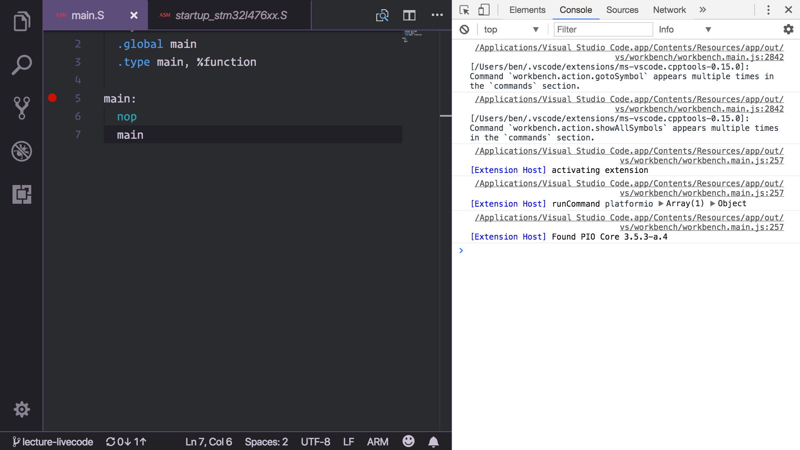
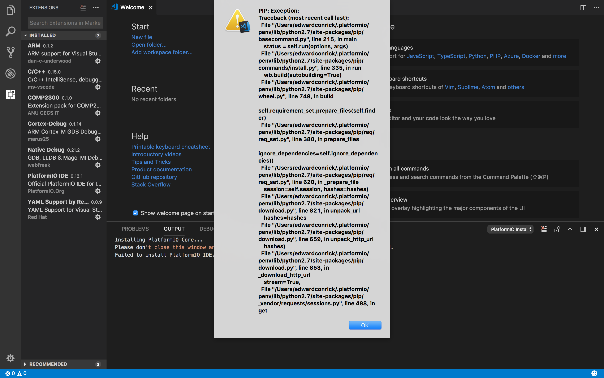

Software setup
Update: if you’re having trouble in the CSIT computer labs, we’ve added a
script to help you out. Open up a terminal and type setup-platformio then hit
return and it’ll do all the things for you (if you haven’t set up anything yet
on your lab account this still might take ~30mins or so, but shouldn’t take much
longer than that). If everything already works on your lab machine running the
setup-platformio script shouldn’t break anything, but you don’t have to do it
either.
The Integrated Development Environment (IDE) we use in COMP2300/6300 is Visual Studio Code (we’ll usually call it VSCode for short). VSCode is a generic text editor, which means that it’s really good at editing text, but doesn’t care too much what that text is/represents. However, VSCode also allows people to write “extensions” to help VSCode write & run code for different programming languages.
One such extension is called PlatformIO, which is an “an open source ecosystem1 for IoT (Internet of Things) development”.
We’ll only be dealing with one specific “board” (your stm32 l476g discoboard) in this course, so we won’t use all of the PlatformIO functionality. Still, it provides the compiler, assembler and other important components for writing & running code on your discoboard. You don’t have to master everything straight away, we’ll step you through it in the labs (so make sure you attend all the labs!).
Installation
If you’re on one of the CSIT Ubuntu lab machines, then most of this is already done, although if it’s the first time you’ve ever used VSCode in the CSIT labs then you’ll still have to install the VSCode extensions—jump to step 3.
To set this all up on a new machine (e.g. your own laptop) here are the steps:
-
read the COMP2300/6300 own machine policy
-
download & install VSCode (works on macOS, Linux & Windows)
-
open VSCode, open the Extensions view
-
search for and install the COMP2300 extension (version
0.3.5, idanucecsit.comp2300-extension-pack) -
reload the VSCode window (using the command palette)
After you finish these steps, VSCode will say that it’s “Installing PlatformIO Core”. Wait until it finishes (this might take several minutes, depending on your connection & computer) then wait for the prompt to reload the window again. Be patient—if you refresh the window before it finishes it cancels the install process and you have to start again!
Using VSCode & PlatformIO
VSCode has pretty good documentation, and the lab material will link to specific parts of it where appropriate. However, understanding your tools is really important, so take the time to read through the documentation and get to know the features of VSCode. It’ll make your life easier in the end, even if there’s a learning curve at the start.
Once you’ve got VSCode & the necessary plugins installed (and you’ve got your discoboard) you’re able to write and run your first program. That’s what lab 1 is all about—so head to that page and give it a try.
How the software environment works
Having an understanding of how the software environment work will help you make sense of some error messages, as well as how you might resolve them.
The COMP2300 extension depends on Cortex Debug, PlatformIO IDE and a few other extensions.
So when COMP2300 extension is installed, those extensions will be installed as well.
This also means that if one of those extension fails to activate at start up/window reload,
the COMP2300 extension will also fail to activate.
All these extensions will be installed under the ~/.vscode/extensions directory.
PlatformIO IDE extension is a light weight interface between VSCode and the actual PlatofrmIO Core. PIO Core (platformio program) does all the heavy lifting of toolchain and library management, compiling and uploading code etc.
When PIO IDE extension starts, it first verifies the integrity of PIO Core installation,
and download it if necessary (under ~/.platformio directory).
In this course we are using the ST STM32 “platform” (platform=ststm32@version in platformio.ini).
This platform is installed under (~/.platformio/platforms).
PIO Core will download necessary toolchains associated with this platform
(~/.platformio/packages).
The most important three are ARM GCC (toolchain-gccarmnoneeabi), OpenOCD (tool-openocd),
and ST-Link (tool-stlink).
ARM GCC is used to compile, and debug code; OpenOCD and ST-Link are used to upload compiled binary to the disco board and providing an interface between the board and the debugger (GDB).
There are some settings (in .vscode/settings.json; this includes paths, suppressing PIO IDE’s forceful replacement of .vscode/launch.json) and debug configurations (in .vscode/launch.json) needed to get Cortex Debug running properly.
These should be handled automatically by the COMP2300 extension when it activates.
Both COMP2300 extension and PIO IDE look for platformio.ini file in the workspace root directory to determine whether this workspace is a PlatformIO project.
They only activates when a PlatformIO project is activated.
When you execute PlatformIO: Build (e.g. pio run),
it uses ARM GCC to compile the source files into an ELF image (.pioenvs/disco_l476vg/firmware.elf).
And PlatformIO: Upload (e.g. pio run --target update) will upload this ELF image to the disco board using OpenOCD
(used to be using st-flash with the old 3.8.0 version of STM32 platform,
somehow in the 4.0.1 version it “forcefully” use OpenOCD). When launching the debugger,
the Cortex Debug extension will launch st-util as an interface between the board and GDB
(disco board <--> st-util <--> arm-none-eabi-gdb <--> VSCode).
st-util opens a port (50000 by default) through which GDB connects and talks to it;
and VSCode interacts with GDB through
MI commands.
You can manually issue these commands through the DEBUG CONSOLE.
You can view a bunch of different things through the OUTPUT panel by selecting the source
(e.g. Tasks, Extensions, Log etc.).
This is very helpful in troubleshooting.
Troubleshooting
Here’s a list of issues you might come across, depending on the specific details of your machine. As always, be careful with copy-pasting random code you found on the internet (even in a university course!), and try to understand the problem first before you try the solutions listed.
If there are new problems which come up often enough on Piazza I’ll add them here.
Sometimes the board can get into a bad state causing the uploading to fail (especially when the debug LED becomes yellow). Stop any active debug session, and try unplug & re-plug to reset the board.
VSCode developer tools console
Before you look at the specific problems, here’s a tip for getting the most useful error messages out of VSCode when things are going wrong. In command pallete, run the Developer: Toggle Developer Tools command and you’ll see a new pane pop up in VSCode. Switch to the Console tab (top-right of the screenshot) and you’ll see something like this:

Now, the messages in this Console view aren’t really meant for VSCode users, so there will be a lot of stuff here, and a lot of it probably isn’t relevant. However, if you keep this view open while you do the PlatformIO command which isn’t working for you, then it might output some error messages here (watch for red lines of text) which give you more detailed information about what’s going wrong.
Breakpoint problems
can’t set a breakpoint by clicking in the left-hand “gutter”
If you suddenly lose the ability to set a breakpoint by clicking in the “gutter” to the left of the line numbers next to your code, then check that VSCode is still treating your file as an ARM file rather than just an Assembly file.
To see if this is the case, check the bottom-right hand corner of the VSCode
window (just to the right of the smiley face ☻). If it says “Assembly”, then
click there and switch it to ARM (you should probably use the “Configure file
association for .S” drop-down option to set this to ARM for all .S files
while you’re there).
OpenOCD Upload Problems
connection problems
Error: open failed OR Error: failed to read version
This means that OpenOCD fails to connect the board. First check whether you have connect your board to the computer. Then try unplug and re-plug the board.
If you are on Windows, make sure you have installed the driver. If you are on Linux, it could also be a permission issue.
flash failure
If you got your discoboard later in the course (e.g. after week 2) then you may have some initial problems uploading & running your first program through the VSCode Build/Upload commands. The error message might look something like this, although there are variations.
Error: init mode failed (unable to connect to target)
First, try unplug & replug. If that doesn’t fix it, and if it is the “first upload” problem there’s a simple one-time fix (i.e. you only have to do this once—once you’ve successfully uploaded at least one program to your board this way then you can use the VSCode commands from then on).
First, try the PlatformIO Build command (which will fail), then use the following commands in the VSCode integrated terminal:
~/.platformio/packages/toolchain-gccarmnoneeabi/bin/arm-none-eabi-objcopy -O binary .pioenvs/disco_l476vg/firmware.elf .pioenvs/disco_l476vg/firmware.bin
~/.platformio/packages/tool-stlink/bin/st-flash write .pioenvs/disco_l476vg/firmware.bin 0x08000000
libusb_open()
Error: libusb_open() failed with LIBUSB_ERROR_NOT_SUPPORTED
This doesn’t seem to be a problem as long as there are no other errors that causes the upload program to fail. The cause of this problem is still unknown, but the uploading still seems to succeed in the cases seen so far.
ST-Util & GDB Problems
ENOENT
Failed to launch ST-Util GDB Server: Error: spawn C:\xxxxxx\xxxx\.platformio\packages\tool-stlink\st-util.exe ENOENT
ENOENT is file not found error.
COMP2300 extension will first try to find tool-stlink\bin\st-util.exe,
when failed, assumes tool-stlink\st-util.exe path.
This checking is done when COMP2300 activates.
This this especially the case when COMP2300 fails to activate properly,
and the path was already set in .vscode/settings.json with the old (3.8.0) ST-STM32 platform.
Make sure the COMP2300 extension is up-to-date (0.2.x+),
and make sure ST-STM32 platform has been updated (pio update),
and ~/.platformio/packages/tool-stlink/bin/st-util.exe exists.
And try reload the window.
On Windows, we have discovered that if your user name is of another language, sometimes the path resolution will fail. In this case the easiest would be to create another user with an English user name, and do all the development there.
device not found
Couldn't find any ST-Link/V2 device
Check board connection; replug if necessary.
If you are on Windows, check if you have installed the driver. If you are on Linux, it could also be a permission issue.
failed to read core id
src/common.c: Failed to read core id
Connection issue. Replug the board.
time out
Failed to launch ST-Util GDB Server: Timeout.
This is likely due to st-util failed to start properly.
Get more info from the Adapter Output.
this socket is closed
Failed to launch GDB: Error: this socket is closed
This is probably because GDB failed to launch, check error output in DEBUG CONSOLE.
One case we found is due to a path error made by an attempt to manually install packages.
Check the paths in the settings.json, and also actual paths on your system.
remote communication error
Failed to launch GDB: Remote communication error. Target disconnected.: No error. (from target-select extended-remote localhost:50000）
This has been found on Windows, however the same thing MAY happen also on other OS as well.
The real problem is that the default debug port 50000 is being used by some other software. So when the debugger tries to connect to it, the other software, rather than the expected server (st-util), responds, and refuses the connection request from GDB since it doesn’t know who GDB is.
So the proper solution is to close the software that’s using port 50000, then everything should work just fine.
To find out the clue on what it is, do the following:
- Open Command Prompt in Administrator mode (search “command prompt” in start menu -> right click and select “run with Administrator mode”)
- Run the command
netstat -a -b, and look for the application with Local Address127.0.0.1:50000. - Close the application that’s using the port (system monitor MAY be needed, Ctrl+Shift+Esc).
If you can’t find the application, it may also mean that port 50000 wasn’t closed properly.
Maybe try restart the computer in this case.
remote connection closed
Failed to launch GDB: Remote connection closed (from target-select extended-remote localhost:50000)
This seems to be a problem with GDB failing to connect with st-util.
Get more info from the Adapter Output.
connection refused
Failed to launch GDB: localhost:50000: No connection could be made because the target machine actively refused it.
This could be caused by your anti-virus software. Please check and turn it off if necessary. It could be interfering and refusing connection to certain ports.
get more debug information
You can also view the output from st-util in the Adapter Output tab (check OUTPUT panel during debug -> select Adapter Output from the drop down list).
Debug Config Problems
Can’t find ARM On-Chip Debug
As explained in the above section, COMP2300 should automatically initialise the debug config.
If only “PlatformIO Debug” exists,
it means that PIO IDE has forcefully replaced launch.json before COMP2300 extension could stop it.
It could be a race condition happened between PIO IDE and COMP2300 extension, and
it could happen at the first opening of a cloned directory when
.vscode/settings.json doesn’t exist. If this is the case, a window reload should fix the problem.
Otherwise it could be a trickier problem to figure out why COMP2300 extension didn’t start properly. Go to Help -> Developer tools -> Console, and see if there are any errors. It may fail because one of its dependency fails to activate.
There was a problem with Cortex Debug failing to install its 0.1.15 update properly,
causing xml2js package not found.
If that’s the case, you might need to uninstall the COMP2300 extension, and delete the ~/.vscode/extensions/marus25.cortex-debug-0.1.15 folder, and re-install the extensions.
This will reinstall Cortex Debug extension.
OS Specific Problems
[macOS] Installation crash — PIP: Exception
On some macOS machines when installing PlatformIO it might crash like the following: 
This is because the SSL library is too old. So the solution is to install a newer version of OpenSSL library, and upgrade Python to make sure it uses this updated library.
In the terminal, type:
brew install openssl
You will need Homebrew if you haven’t installed it. Then check the OpenSSL version in Python:
python -c "import ssl; print(ssl.OPENSSL_VERSION)"
The version should be the latest (1.0.2n).
Otherwise you need to “re-“install Python
brew install python
Then open VSCode, press Ctrl/Cmd + , to open up settings,
put the following in User settings:
"terminal.integrated.env.osx": {"PATH": "/usr/local/opt/python/libexec/bin"}
Then reload window and wait for PlatformIO to finish installing core.
[Linux] Device permission issues
On some Linux machines you might have read/write permission issues in connecting
to your discoboard. As a result, PlatformIO fails to upload (pio run --target
upload) with the following error message:
Couldn't find any ST-Link/V2 devices
This problem can be solved by with the following commands:
#!/bin/sh
sudo sh -c 'cat > /etc/udev/rules.d/49-stm32.rules' <<EOF
# 0483:374b - STM32F4 Dsicovery in USB Serial Mode (CN5)
ATTRS{idVendor}=="0483", ATTRS{idProduct}=="374b", ENV{ID_MM_DEVICE_IGNORE}="1"
ATTRS{idVendor}=="0483", ATTRS{idProduct}=="374b", ENV{MTP_NO_PROBE}="1"
SUBSYSTEMS=="usb", ATTRS{idVendor}=="0483", ATTRS{idProduct}=="374b", MODE:="0666"
KERNEL=="ttyACM*", ATTRS{idVendor}=="0483", ATTRS{idProduct}=="374b", MODE:="0666"
# 0483:df11 - STM32F4 Discovery in DFU mode (CN5)
SUBSYSTEMS=="usb", ATTRS{idVendor}=="0483", ATTRS{idProduct}=="3748", MODE:="0666"
EOF
sudo udevadm control --reload-rules
echo "Unplug and replug your device to activate the new rules."
For your convenience, here’s a script which does it all for you.
Note: the product ID is found by doing:
dmesg | grep 'New USB device found, idVendor=0483'
[195436.094414] usb 1-1.3: New USB device found, idVendor=0483, idProduct=374b
This should be the STM32L476 Discovery board product number.
Further reading:
- https://github.com/texane/stlink/issues/486
- https://github.com/platformio/platform-ststm32/issues/74
[Windows] ST-Link Driver
On Windows you will need install ST-Link Debug Driver before Windows will connect to the discoboard. If you don’t, you’ll get an error like this:
WARN src\usb.c: Couldn't find any ST-Link/V2 devices *** [upload] Error -1
You can get the ST-Link driver here. Just unzip it and follow the
instruction in readme.txt.
[Windows] package manager problems
You might see the following error:
PackageManager: Installing tool-stm32duino @ ~1.0.0
Downloading [###---------------------------------] 10%
Error: Please read http://bit.ly/package-manager-ioerror
Warning! Package Mirror: [Errno 0] Error
Looking for another mirror...
Downloading [------------------------------------] 1%
Error: Please read http://bit.ly/package-manager-ioerror
Warning! Package Mirror: [Errno 0] Error
Looking for another mirror...
Error: Could not install 'tool-stm32duino' with version requirements '~1.0.0' for your system 'windows_amd64'.
Please try this solution -> http://bit.ly/faq-package-manager
You should probably try the linked solution.
Basically, run the following in system terminal (Start Menu -> cmd):
"C:/Users/<your user name>/platformio/penv/Scripts/platformio.exe" run -d "<pio project dir>" --target upload
replace <your user name> with your user name,
and <pio project dir> with your cloned repository (probably C:/Users/<your user name>/comp2300-2018-xxx),
leave the quotation marks in.
[Windows] integrated terminal freezes
On some Windows machine VSCode terminal tab freezes at start up. This happens irrespective of the shell selected. Because of this the debugger will not run.
This is a VSCode problem, unrelated to PlatformIO. The cause of the problem is still unclear. There is no fix at the moment.
[Windows] Disappearing st-util.exe
We have encountered some issue where the st-util.exe file is being removed. It
looks like this is some strange interaction with
Avast but it’s hard to tell for
sure. If you’re on Windows and you have errors mentioning st-util.exe, it is
probably a good idea to check that the file is still there:
- navigate to
C:\Users\<your name>\.platformio\packages\tool-stlink - check if the
st-util.exefile is present—if it is, your problem is elsewhere - if it is missing, go back up one folder to
packagesand delete thetool-stlinkfolder - run the PlatformIO upload command again to re-download the file (this may need to be done from command line—you’ll need platformio on your path)
If you still have issues after this, consider disabling your antivirus or changing to a different provider.
[Windows] Adding platformio to windows path
- Open a file explorer
- right click This PC and select properties
- in the new window select Advanced system settings on the left
- select Environment Variables
- under System variable select Path and click edit
- click New
- enter the location of your platformio Scripts file, it should look something like this:
C:\Users\<your name>\.platformio\penv\Scripts - Keep clicking Ok until you get back to the System window.
PlatformIO commands should now work in your command prompt.
-
The ecosystem thing means that PlatformIO isn’t just for writing a specific program on a specific board with a specific “framework”. You can read more about it in the documentaion if you’re interested. ↩